APRS NETWORK FRATRICIDE: Generally, all APRS digipeaters are supposed to transmit immediately and all at the same time. They should NOT wait long enough for each one to QRM the channel with the same copy of each packet. NO, APRS digipeaters are all supposed to STEP ON EACH OTHER with every packet. This makes sure that everyone in range of a digi will hear one and only one copy of each packet. and that the packet will digipeat OUTWARD and not backward. The goal is that a digipeated packet is cleared out of the local area in ONE packet time and not N packet times for every N digipeaters that heard the packet. This means no PERSIST times, no DWAIT times and no UIDWAIT times. Notice, this is contrary to other packet systems that might want to guarantee delivery (but at the expense of throughput). APRS wants to clear the channel quickly to maximize throughput.
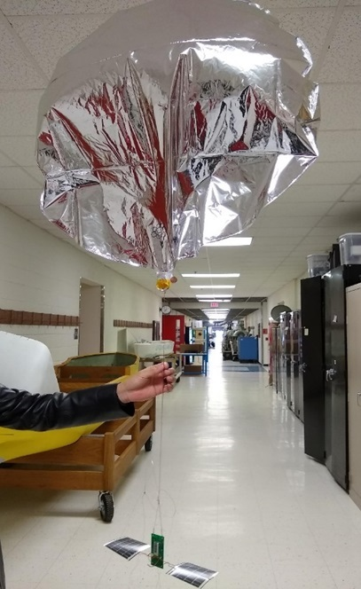
2018 Summer Pico Balloon Test:
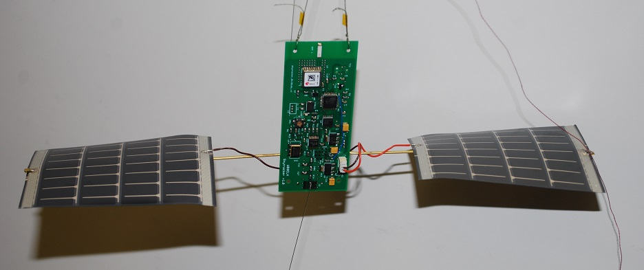See Summary Paper
A summer intern, Anika Williams, studied the potential of using ultra lightweight APRS telemetry systems on a party-balloon sized mission to achieve constant pressure altitude and float potentially around the world. She used a WB8ELK SkyTracker and had a successful mission. Unfortunately we launched on a day with a totally unexpected and unusal weather pattern bringing in winds that took it North instead of the usual East. After about 17 hours and at night over Lake Ontario it expeirenced severe weather and lost pressure and began to descend as shown in the map below.
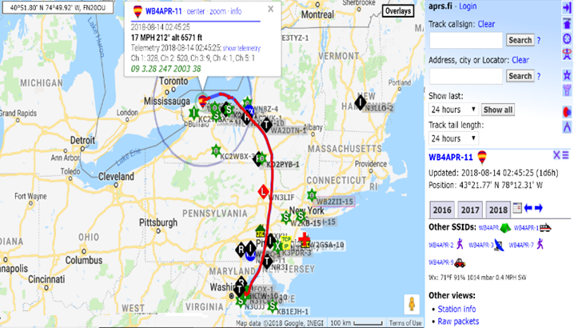
Landing: After experienceing severe weather, the balloon began leaking helium and descended fortunetely over land. And our prediction is shown below. Since the payload is solar powered, there is no reason that it should not continue to beacon its position for some time to come unless it landed upside down or in permanent shade. We invite any hams in the area to go take a listen. It transmits once every 2 minutes on 144.34 MHz (clear channel) and also on 144.39 (busy channel).
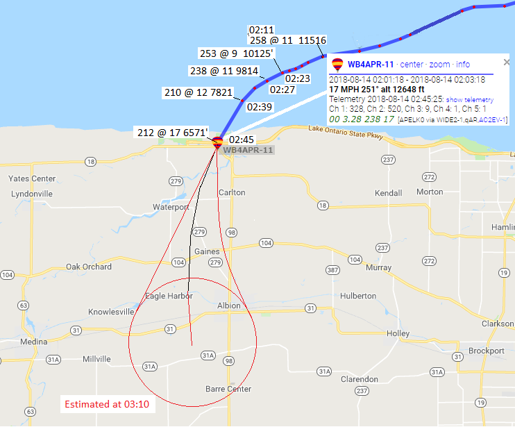
Watch the brief launch video.
2017 Solar Eclipse:
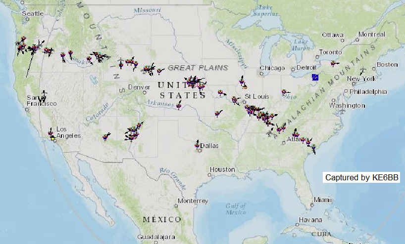Image above provided by Scott, K4KDR or Mark, KE6BB. On the Great American Solar Eclipse of 2017, a capture from FINDU.COM showed a surprising 244 APRS balloons that day. This was a surprise to see so many APRS balloons on a single day. The scope is not understood. 96 of those balloons had nothignt to do with the Eclipse and were elsewhere in the world. Then I counted 148 were within the continental USA by LAT/LONG. But a visual scan zoomed in on the eclipse path on APRS.FI only found about 46. That matches closely the planned NASA project with 50 schools launching balloons all along the path, though their web page mentiones NOTHING about APRS on those balloons. Their mission was to stream live video of the moving shadown of the moon acorss the Earth. Clearly smart people realized that adding an APRS device would make it easy to recover. If anyone has more info, please fill us in.
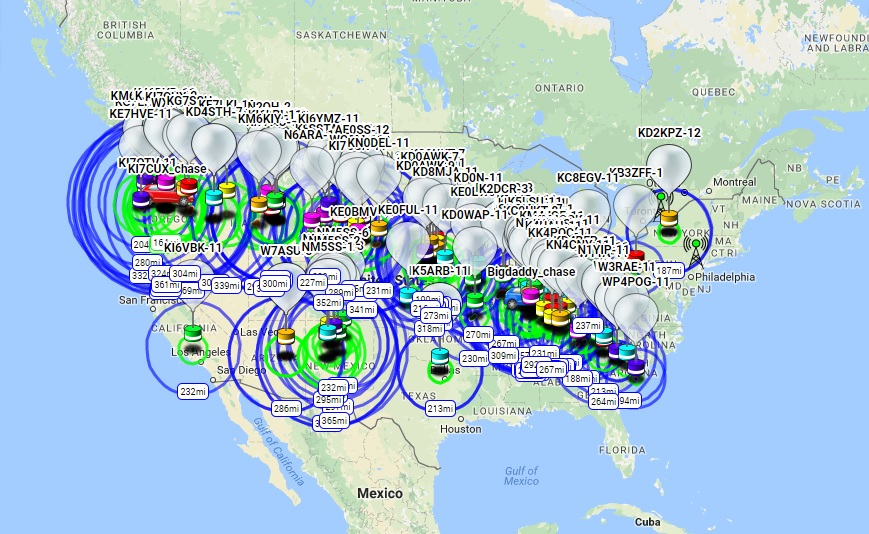
Another plot of the same balloons shows on the North Carolina Near Space web page shown above. That page describes two of the above Eclipe balloon missions in detail. Notice, at the time of this screen capture, he balloons out west, having been launched earlier, were achieving higher altitudes than the ones lanched later in the east as evidenced by the blue range circles under each balloon.
2015 Mission - Solar Sculpture:
Tracking the Solar-Sculpture: This rapid-response (3 day prep) mission was atempting to get a tracker on the Maryland Institute College of Art's solar hot air balloon. The mission ended up being a tether mission, but this package (shown at far right) was my latest version of my typical balloon tracker using a soda bottle for solar heating and water survival. Note, this year I put the tapered end of the bottle "down" so that it would sit lower in the water (in the event of a water landing) and be more stable. See description document
2014 Mission - Solar Heating Data:
Midshipmen 1C Bottomley and Daly3 May 2014 Re-Flight: The near image (bottle) at right was the 2014 solar thermal payload that was re-flown to get the intended solar thermal data. The image shows it in comparision to the more conventional approach some take to packaging in foam. The mission proved our thesis (since 1991), that balloon payloads do not need insulation and heavy foam, but simply need clear containers to take advantage of solar heating. The payload shown here used the conventional foam packaging (top) but also a solar thermal package as well. The Thermal payload consisted of three concentric layers of clear plastic. The inner layer was a single layer of bubblewrap around the electronics. The second layer was a plastic water bottle and the outer layer was a larger soda bottle. There were thermisters in each of the three layers and one outside as shown here. See the University of New South Wales Report on using solar heating.
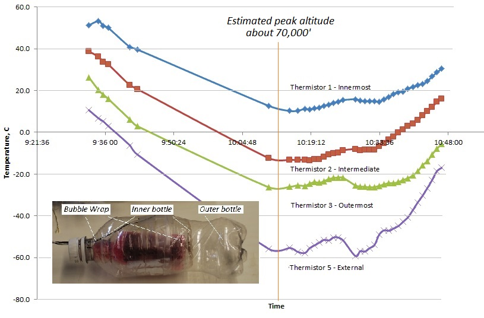
The Chase: The chase was as exciting as ever. The balloon went into short-cycle resets within a few minutes of launch giving data every 2 seconds instead of every minute. This constant reset of the GPS did not allow the TinyTrack 4 to capture any NMEA senteces with altitude or CSE/SPD data. Also the GPS was not altitude rated and started generating random erroneous data above 33,000 feet causing us to divert through small towns towards the erroneaous data. But when the payload descended below 33,000 feet, it began with good data and now we were 20 miles away. The last posit after 100 miles of flight was within 100 yards of the Susquehanna River at 2400 feet. A sure gonner. But data from the backup SPOT system was showing it on the shore line. Sure'nuff, it was found 60 feet short of the river! Payload was recovered! (Photos will follow).
Conclusion: Triple layer clear plastic packaging for balloon payloads provides a comfortable, 15 C (60 F) benign electronics environment for balloon missions. The clear plastic drastically saves weight and they still provide low density impact protection with no sharp edges and also can be sealed to float during water landings. Unfortunately the thermister inside the coam container failed, so we did not get that data. Post-flight note: During preparations for launch, you can shade the payload if you want to avoid excessive heat buildup (ours got to 53 C (127 F).
6 April 2014: The initial attempt of this experiment was launched near Chambersburg PA with burst near Shrewsbury with apparently an unrestrained descent at 4000 feet per minute (nearly 50 MPH straight down. Flight path to the last position heard on APRS.FI is shown below. Ignore the 4 hours wasted search around GlenRock. Although the 5000' last position was on my radio the whole time, (over where the map shows "landed"), we were going by the last Balloon SYMBOL on my attached GPS map display. Not until 4 hours later did we realize that the last two posits from the radio did not make it to the GPS for some reason, and so we were searching around the wrong spot!
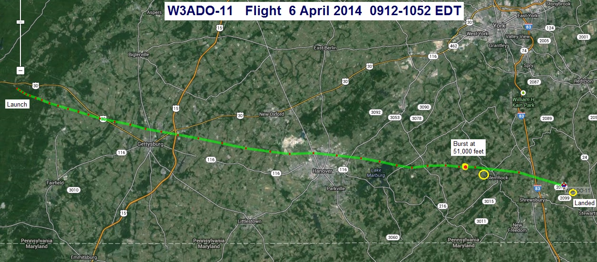
Next is the post-fligh/post-search detail of the last 2 minutes of the flight. The last position of APRS.FI at 9273' is shown in the upper left corner. Then there was one more position captured on my mobile APRS radio shown here at 5207 feet. At that point it was 1 minute from impact and going down at 50 MPH and at 145 degrees at 6 MPH.
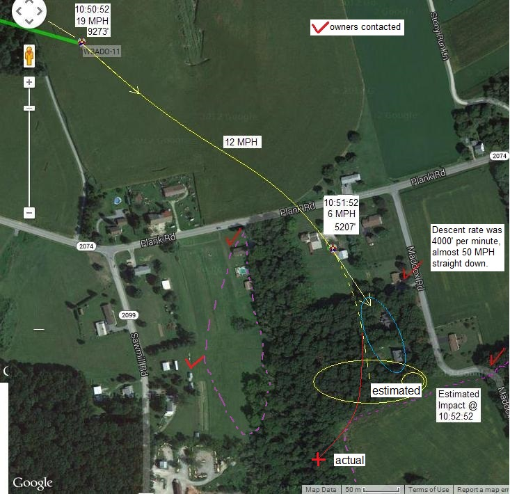 . 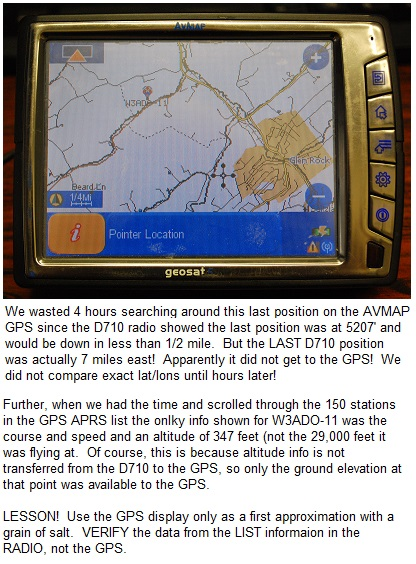
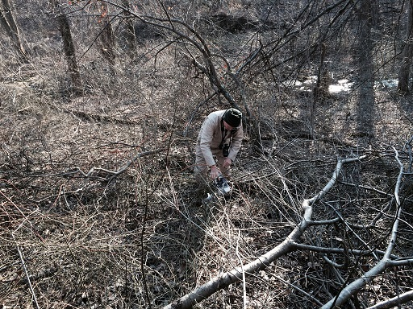
We did not have the advantage of the above image at the time, and assumed that the balloon was descending at the design rate of 600' per minute and would have traveled another 1/2 mile before impact. So we spent all our time searching to the southeast of this location. It was only after getting home and reviewing all the data that we realized this payload came down like a rock. See altitude profile. The purple dotted lines on the map show how close we had gotten in the initial search, but at that time we were looking mostly high in the trees for the balloon, parachute and 30 feet of string.
{kind=link}
{kind=link}
CONCLUSION: We concluded that not only did we not search the two backyards that now seem obvious,but we were also looking for a balloon and bright BLUE/ORANGE 3' diameter parachute. The high descent rate suggests the payload was detached from any shards of the balloon and from the parachute. Thus, we were not looking for the right thing. We SHOULD HAVE BEEN LOOKING for the payload. It was originally about a 1/2 shoe box block of styrofoam. But by the time it was released, it was mostly dark duct tape. Thus, we would not have see it if we were looking for exactly that.
IDEAL SEARCH CONDITIONS: Right now, the fields are bare, and the trees are bare! We can see 100 yards easily into the trees, not even any buds are showing. But one week from now, it will be impossible to see into the trees. Besides, without a balloon or parachute, the search needs to be on the ground. And the briars are also going to become impenitrable. The payload does have a return phone number on it, but without the balloon or parachute, it is just another piece of styrofoam trash.
FOUND: Realizing it probably had no chute nor balloon we returned with all the above new analysis in hand to serach inside the tree area on the ground. It was not where we predicted in that last 1 minute of 50 MPH descent but had taken a hook curve to the southwest. After an hour we finally found it as shown. Only the payload and radar reflector were here. Celebrations commenced on the way back to the academy, until someone realized they had lost their cell phone. We returned to the site... yet again. But fortunately, the cellphone had a pinger on it(ringer) and it was found in the leaves in short order.
{kind=link}
Other Tracking Sites: lu7abf, Pedro Converso suggests the live web page balloon tracking and predicting web page they use in South America so that everyone with a smart phone can see it live as it is happening as well as the charting page that shows the altitude profile (captured in a link above) and the speed/height profile from that web page.
2013 - Lightweight Party Balloon Payload
Midshipmen 1C Hardesty and Hinz17 April 2013: Balloon Launch Annapolis, only to 5000' with FM CW downlink on 433.72 +/-. It uses 2 party balloons and is very light weight. It sends LAT/LON/ALT in 3 digits each in quasi-CW meaning only the first part of normal CW for each digit is sent. IE, "1" is a single dit and "6" is a single dah etc. The 3 digits are in tenths of minutes of LAT/LON with degrees always as 38N and 76W. A string cutter will release the payload as soon as it crosses route 50 on the Eastern shore (Longitude of 76 04'). From then on and below 1000' it will send 4 digits of MM.MM in hundredths of minutes for precise finding.
Talkin on 147.105 Repeater. But best to watch for APRS bulletins.
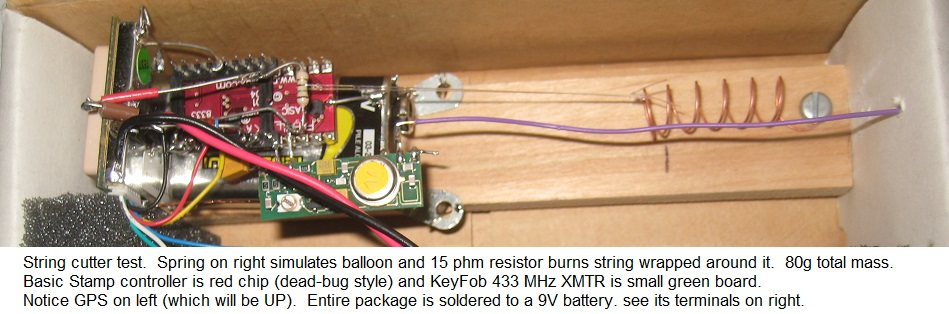
SPLASH! ARGH! it worked perfectly. It cut down at exactlly the programmed longitude but we did not do a good job of predicting the descent rate of a water bottle with 30' streamer and no parachute. It came down no faster than it went up. It overshot Kent Island! As you can see below, we had even included a South Limit so that if the track missed the island to the south then the burn command would not fire. As you can see we should have been smart enough to anticipate the descent and set the burn longitude further west at the beach. And also, we should have made the south limit anticipate the SW heading from Annapolis, and moved it a few miles higher. But since the longitude crossing would have still preceeded the south limit, that would not have saved it.
Oh well, next time. Here is the track:
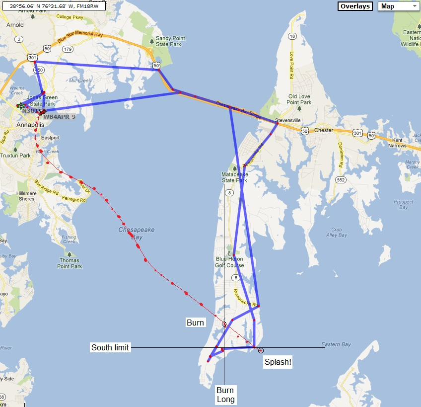
2012-B - SPY-CAM Balloon Launch - Annapolis, 27 April 2012:
Midshipmen 1c Thomasson, Larson, Ballester, Garcia, Rose, and Fick

This launch (W3ADO-11) was targeted for 1300 from Annapolis but didn't get off the ground till about 1545 due to dozens of little gotcha's. It was designed to be a low altitude cruise using party balloons to around 6500'. We chased it across DELMARVA with APRS confident in its cut-down string to allow us to save it before the Atlantic shore. A cut-down command was sent as soon as it crossed the Choptank River, east of Easton. The cut-down mechanism worked but the chute got tangled in a failed balloon. But without the 5th balloon, it came down about the same place anyway. It had APRS and a 2.4 GHz wireless camera on channel 1 as shown below. See the mission design document.
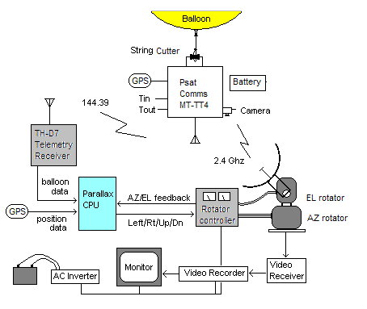
Mobile Balloon AZ/EL Tracker: The above sketch shows how we integrated everything in the chase vehicle so we could see live video from the balloon while we chased it across the DELMARVA penninsula as shown below. Because it is used a milliwatt 2.4 GHz wireles camera, we needed a high gain dish on the van. Thus the need to automatically do AZ/EL based on the APRS data from the balloon and GPS data from the van.
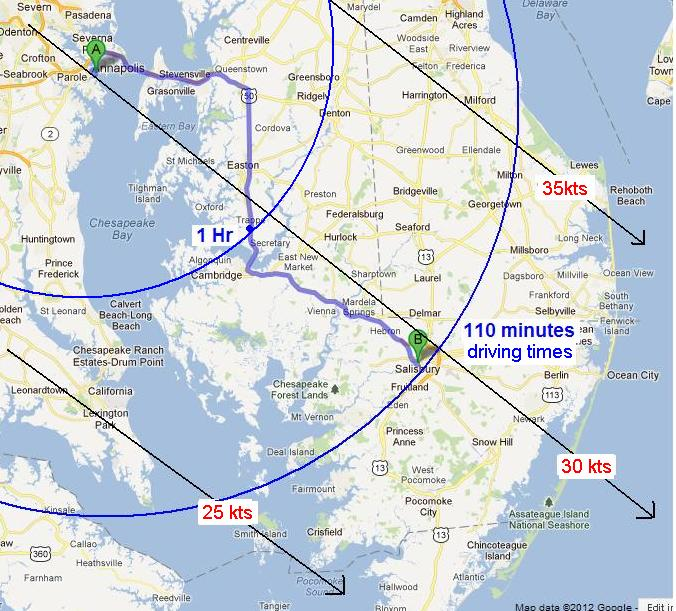
Predictions: The map above was our best guess. Unfortunately it was for Friday afternoon beach traffic. Our plan was to drive at traffic speeds to Easton and then wait for the balloon to approach us. Hopefully we would cut it down to land right on us. The chute descends at about 1000 fpm so from 6500 feet it should take about 6 minutes and land in about 3 miles. The APRS.FI map below shows the actual track.
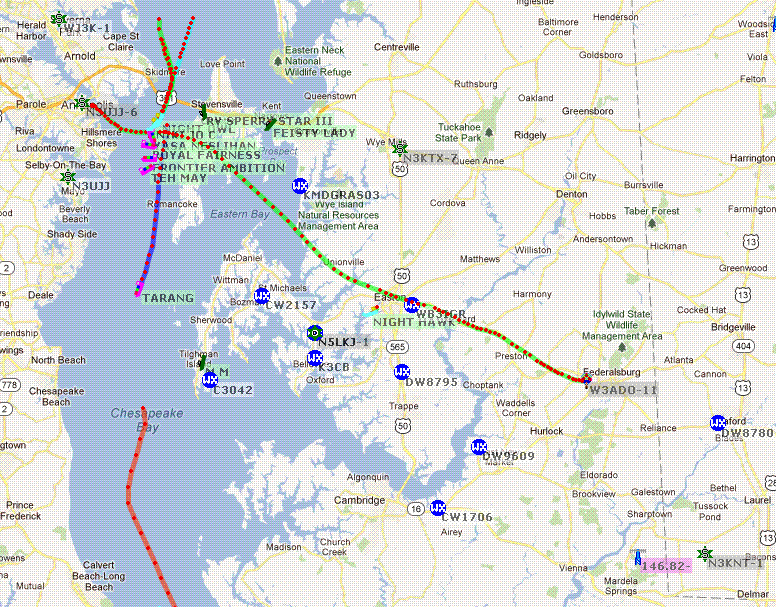
Payload Design: The whole thing weighed only 320 grams (about 0.7 lbs) and fit in a 1 liter bottle. You can cut a bottle, and then lightly heat one end of the cut and it will shrink slightly so you can then rejoin the bottle with a snug water proof fit. Some tape makes sure it will not separate. We require the bottle for two things. 1) Solar warming of the electronics, and 2) the large amount of surrounding water landing sites. The temperature at launch was about 70 F and inside the bottle was about 88F. This temperature rose to a peak of about 98 F (36.6C) at about 3500' but then fell back to 88 F at the max altitude of 8100'. The outside temperature at that height was -35F. We find solar warming much preferred to attemps at insulation with bulky and heavy styrofoam. The sun provides plenty of warmth for daytime launches.

The separation mechanisim is simply a 10 ohm resistor (1/4 watt), but includes a clever 2 pin jumper that will then cut off current to the resistor once separation is successful and will provide a telemetry bit indicating separation has occurred.

The camera is a simple 2.4 GHz wireless camera. It draws about 150 mA and is supposed to provide a range of about 1000 feet (to an omni receive antenna). By using an 18" dish, this can be extended to about 4 miles. With our 4' wire mesh antenna, we anticipated almost 8 miles range. Everything is mounted dead-bug style to minimize any additional mass. You can also see the two red reed-relays added at the last minute. Our first ones much smaller worked fine, but somehow had several ohms of contact resistance which would have significantly impacted the burn resistor (almost 1 amp).

The key to getting good video was the AZ/EL mounted 2.4 GHz antenna mounted on the van. It was driven from a standard Yaesu G5500 rotator system from a Parallax Basic Stamp processor which had serial inputs from the balloon telemetry and van GPS. These combined to drive the AZ/EL antenna. The antenna pointed dead-ahead was synonymous with the "South-center" of the Yaesu rotators to allow maximum turning without driving the dish into the stops.
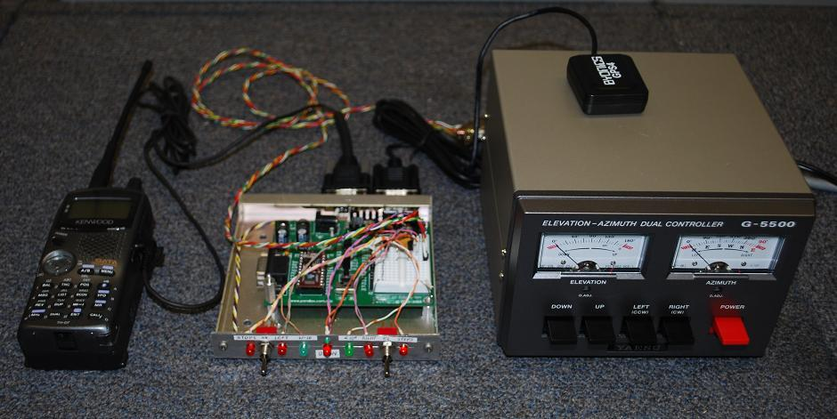
This is the automatic AZ/EL controller using a Parallax Basic Stamp CPU. It took inputs from the GPS on the Van and the TNC in the TH-D7 radio and computed the proper AZ/EL to the balloon. LEDS on the front panel indicated if the dish was moving left or right or up and down. Two additional LED's indicated if the dish was fully CW or CCW and two more Green LED's indicated when the dish was within 10 degrees of straight ahead or within 10 degrees of the horizon (a typical situation). The serial output of theCPU could be monitored with another PC to see what was going on. My particular implementaion disabled the existing meters when in auto mode. I need to rebuild my circuit so that the meter indicators are retained.
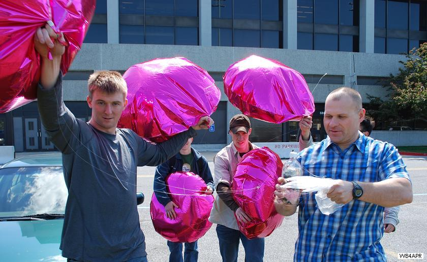
Fortunately Mylar balloons are very rugged. Filled in the building in the background, they went across the road and through the fence 3 times. The first two were because I had to call it back in to reprogram the beacons which were still on a 10 second test rate. The flight rate had to be a 1 minute rate. Notice that the balloons are underinflated by an amount proportional to the desired cruise height. For example, filling them half-full will cause the balloons to rise from the 14.7 psi surface up to about 18,000' where the pressure is half (7.3 psi). But at that fill ratio, you only get half the lift. These shown here are about 80% full to target a 6500' float altitude.


Launch!: We filled a spare balloon in case we damage one. If we dont need it, we release it as a pilot to make sure we know where the wind is going and that we will clear the field lights. It flies level making a great UFO image. In the next image, after the Mmids released the balloons, I had to run down wind to gently release the payload to make sure that the cut-down and separation strings were not tangled. Normally the parachute is above the payload, but since we intended to cut-loose the payload with a string cutter at the top of the bottle, the chute had to hang below.

Tracking Vehicle: This is the view while chasing. We tracked the balloon on the APRSdos screen as well as on the handheld TH-D72 APRS walkie-talkie giving range and bearing to the balloon. Unfortunately due to a missing cable, we couild not activatge the auotomatic AZ/EL tracker and simply manually pointed it. This was easy enough to do as the balloon was 16 mies ahead of us and usually within a few degrees of straight ahead. You can see the antenna controller in the center, and the TV monitor to the right. Below it was the old laptop running APRSdos. Behind the laptop is the DVD recorder, and just the tip of the circuit board with the basic stamp to the left of the laptop is visible.

RECOVERY: We could see the balloons from a half mile away even with the baloon on the ground because they hovered over the payload. One balloon had burst at 8500' and so we did not cut loose, but rode it down on the remaining 4 balloons. We sent the cut down command at 1000' just to prove that it worked... It didnt.

DISCOVERY:When we got to it, everything was still working. In fact, the string cutter had worked and if we had been watching the telemetry we would have seen the separation also occurred. But the burst balloon, being heavier than air, hung down below the descent package and got all tangled in the chute string. So even though the payload had separated, it was stuck with the balloons. NEXT time, we will make sure the payload hangs much farther down the string.

RELAUNCH:Since we still had 4 good balloons and a nice "recovery note", we took out the electronics, and sent the empty container back up for a ride into the sunset. Hopefully, with no distinguishible mass, the balloons will rise faster, and overpressure until they burst and maybe then fall back to earth before it gets to Ocean City. Maybe someone will find it. (no one reported it...)
LESSONS LEARNED AND IDEAS: For next time, we realize there is no need for a chute. Simply cut loose a few balloons and retain a few for a nice descent. But still the problem remains how to not let the lines get tangled so badly as to defeat the cut-down system.
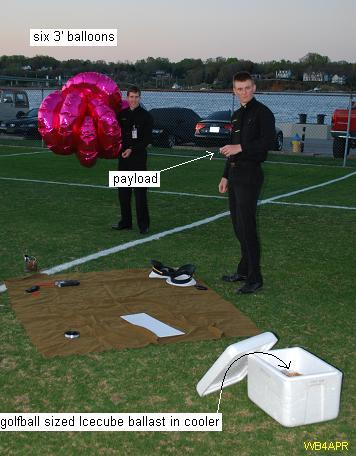
2012-A Long Distance Balloon Attempt - 29 March 2012
Midshipmen 1/C Thomasson and LarsonThe mission of this balloon payload is to give us insight into constant-pressure balloons and especially the use of common mylar party balloons as a fixed volume envelope. Unfortunately, these balloons have a high mass and so the theoretical maximum altitude no matter how many balloons are used is only about 26,000 feet and that is with no payload other than the fixed balloon mass.
Our payload is shown at right. It is about 50 grams. We are targeting 6 party balloons 3' in diameter which should give us a float altitude around 16,000 feet. The Telemetry will be in CW on 28.223 MHz (USB DIAL) and will contain Battery voltage, inside and outside temperatures, and surface luminosity of the ocean/clouds. It has no GPS. We will rely entirely on DF bearings and signal reports. At 16,000 feet the radio range will only be about 175 miles or less, not like the 400 miles for high altitude balloons. Though on 10m we may get some good DX? Transmitter power is 100 milliwatts. or less...
EMAIL DF reports to W3ADO@homeside.to Be sure to include:
{kind=link}
{kind=link}
{kind=link}
{kind=link}